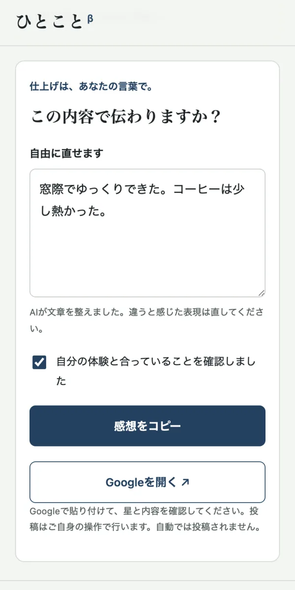
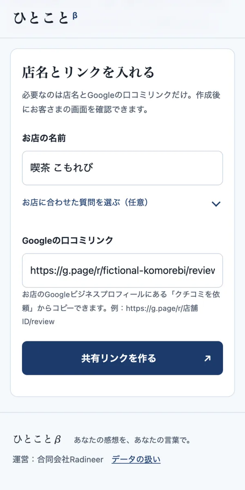
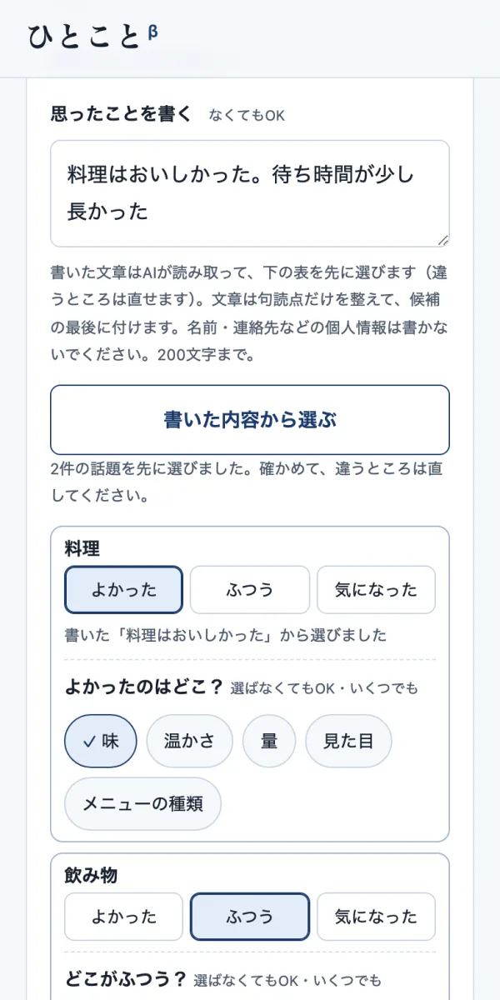
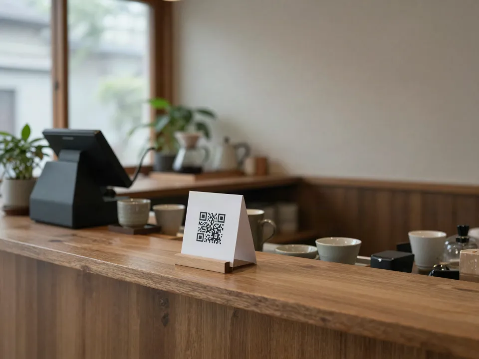
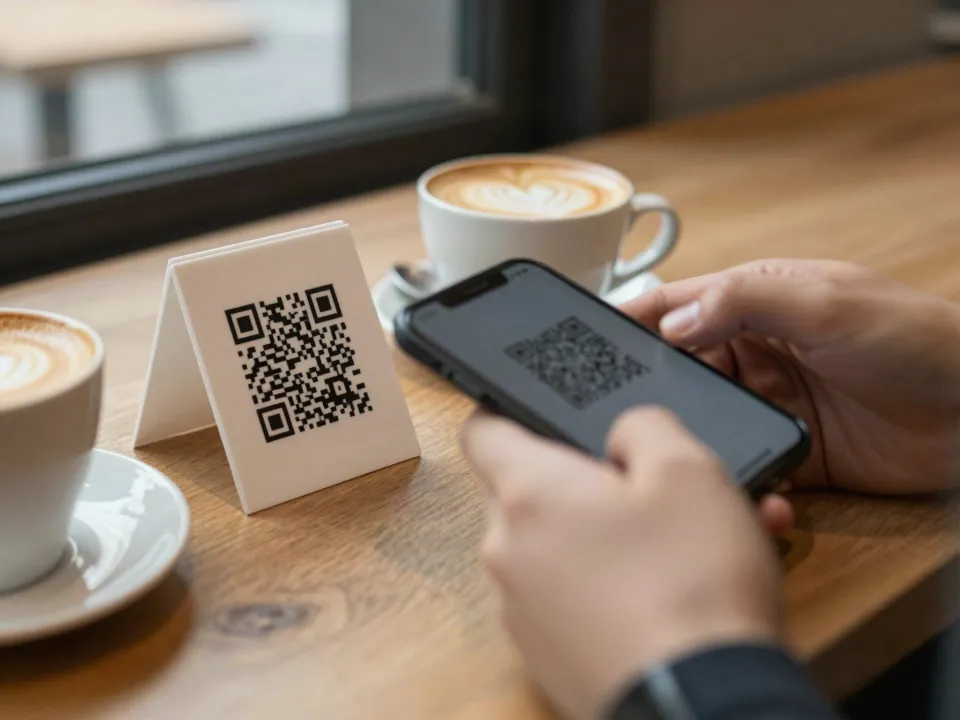
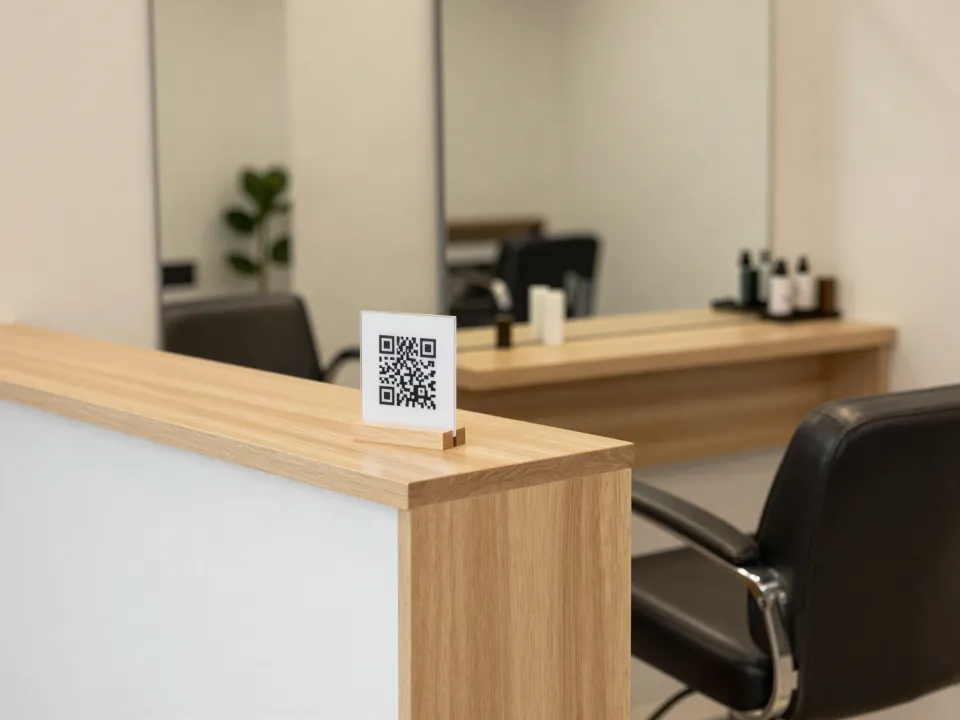
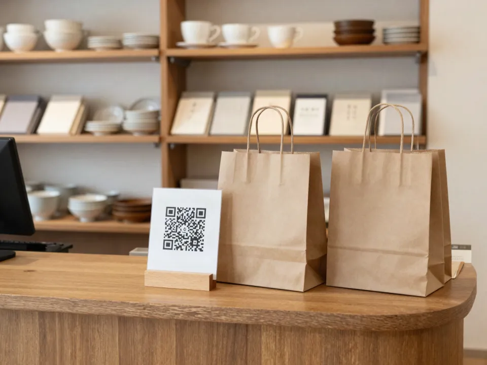

飲食店・美容室・ショップのオーナーさまへ
QRを置くだけ。
お客さまが、自分の言葉で書ける。
何がどうだったかをタップで選ぶだけ。選んだことだけが文章になります。
確認してGoogleに投稿するのは、お客さま本人です。
- 登録・カード不要
- 店名とリンクを入れるだけ
- 自動で投稿しません

よくあるお悩み
口コミ、お願いしたいけれど。
面と向かって頼むのは、気が引ける。
頼んでも「何を書けばいい？」で止まってしまう。
QRやPOPを作る時間がない。
ひとことβは、この3つを小さくするための道具です。お店はQRを置き、お客さまはタップで選ぶところから書き始められます。
しくみ
お店がやるのは、QRを置くことだけ。
-
お店
店名とGoogleの口コミリンクを入れる
共有リンクとQR、掲示用ポスターができます。レジ横やテーブルに置いてください。

-
お客さま
QRを読んで、タップで選ぶ
何があったかと、どうだったか（よかった・ふつう・気になった）を選ぶと、その内容だけで文章の候補ができます。「どこが？」も選べます（選ばなくてもかまいません）。自分で書くこともできます。

-
お客さま本人
文章を確認して、自分でGoogleに投稿
自由に直してからコピーし、Googleで星と内容を確かめて投稿します。投稿せずに閉じてもかまいません。
画面はひとことβの実際の画面です。店名・リンク・感想は架空の例です。
無料でお店のQRを作る置く場所
レジ横に、テーブルに、受付に。
お会計のついでや、席で待つあいだに。お客さまの目に入る場所に、小さく置いておくだけです。

イメージ（AI生成）カフェのレジ横に 
イメージ（AI生成）席のテーブルに 
イメージ（AI生成）美容室の受付に 
イメージ（AI生成）ショップのお会計に
写真はAIで生成したイメージです。実在のお店ではありません。写っているQRは読み取れない飾りです。
実例
選んだことだけが、文章になる。
お客さまは「何があったか」と「どうだったか」、よければ「どこが？」をタップで選ぶだけ。その選択だけから、言い回しの違う文章の候補を3つ組み立てます。ほめ言葉や推薦を足したり、気になった点を消したりはしません。
お客さまが選んだこと
料理・飲み物：よかった（味・温かさ）
待ち時間：気になった（料理が出るまで）
できた文章の候補の一つ（ていねい）。このあと本人が自由に直せます
料理・飲み物は、味と温かさがよかったです。待ち時間は、料理が出るまでが気になりました。
架空の例です。実際のお客さまの口コミではありません。
- 「気になった」を選んだことは、どの候補にも必ず残ります。「よかった」「ふつう」「気になった」は同じ見た目で並び、最初はどれも選ばれていません。
- 候補はAIを使わず、選んだ話題と評価だけで組み立てます。選べる話題はお店の種類ごとに決まった言葉で、お店が変えることはできません。
- 「どこが？」（例：料理・飲み物なら味・温かさ・量・見た目・メニューの種類）は選ばなくてもかまいません。選んだときは、その話題と同じ評価の文になります。
- 候補を使わず、自分で書くこともできます。そのときAIが整えるのは句読点と区切りだけで、AIが使えないときは入力した文章をそのまま編集して続けられます。
- お客さまの画面は、日本語・英語・中国語（簡体字）・韓国語で表示できます。訳すのは画面の案内だけです。
お店の種類で変わる、選べる話題
話題ごとに「どこが？」の細かい項目もあります。どれもお店の種類ごとに決まった言葉です。
- 飲食店・カフェ
- 料理・飲み物／接客／雰囲気・席／待ち時間／価格
- 美容室・サロン
- 仕上がり／カウンセリング／接客／雰囲気／待ち時間／価格
- ショップ
- 品ぞろえ／接客／お店の雰囲気／お会計・待ち時間／価格
- その他
- 接客／雰囲気／待ち時間／価格／わかりやすさ
3つの約束
気持ちを誘導しない道具です。
ひとことβが守る、3つの約束。
星や感想で、振り分けません。
よかった感想も、気になった感想も、同じGoogleの入口へ。低い評価だけを別の窓口に回すしくみはありません。
特典と引き換えにしません。
割引やプレゼントと引き換えに口コミを頼むことは、Googleのポリシーで禁止されています。お店の方にも、特典を付けないようお願いしています。
自動で投稿しません。内容も作りません。
投稿するかどうか、何を書くかを決めるのはお客さまです。お店が文章を用意して書いてもらうこともできません。
ポスターキット
そのまま貼れる、掲示用ポスター付き。
印刷すると、店名・QR・共有リンクと、ひとことの案内が1枚に入ります。QR画像（SVG）だけを保存して、お店のPOPに使うこともできます。
置き場所の例
- レジ横
- テーブル
- お会計のトレー
声かけの例
「よろしければ、今日の感想をこちらのQRからひとことお聞かせください。よかったことも、気になったことも、どちらでも大丈夫です。」
よい評価だけをお願いする言い方や、特典と引き換えにする言い方はしないでください。
無料でお店のQRを作る喫茶 こもれび
スマホのカメラでQRを読み取り、感想をひとこと。
よかったことも、気になったことも。
https://reviews.radineer.asia/?store=…
向いているお店
こんなお店で使えます。
- 飲食店・カフェ
- 美容室・サロン
- ショップ
- そのほか、Googleで口コミを受け付けているお店
条件は、Googleビジネスプロフィールがあり、口コミを書いてもらうリンクを出せることだけです。
- Googleビジネスプロフィールを開く
- 「クチコミを依頼」を選ぶ
- 表示されたリンクをコピーして、ひとことβに貼る
料金
いまは無料でお試しいただけます。
試用中（先着10店）
0円
登録・クレジットカード不要
正式版の予定価格：1店舗 月2,980円（税込）。変更する場合はこのページでお知らせします。
- 試用中に料金がかかることはありません。正式版に移るときは事前にご案内し、お申し込みいただいたお店だけが有料になります。
- 正式版の開始時期と料金は、決まりしだいこのページでお知らせします。試用店舗には、ご入力の連絡先にもご連絡します。
- AIの利用には上限があります。上限に達したときは、入力した文章の編集で続けられます。
先着10店の試用店舗を募集しています。
無料でお店のQRを作る体験版でできること、まだできないこと。
できること
- 共有リンクとQRの作成
- 掲示用ポスターの印刷、QR画像の保存
- 話題・評価・「どこが？」を選ぶだけの文章の候補（AIは使いません）
- 自分で書いた感想の、AIによる句読点の整え
- お客さま画面の4言語表示
まだできないこと
- 口コミの一覧・返信
- 効果の分析
- 複数店舗の管理
- お店の設定の保存（同じ店名とリンクで作り直すと、同じQRになります）
データの扱い
お客さまの感想は、保存しません。
- 感想の本文は、ひとことβのデータベースに保存しません。選んだ話題からの文章の候補は、お客さまのスマホの中だけで組み立てます。自分で書いた感想や「ひとこと足す」の言葉を整えるときだけ、Cloudflare Workers AIへ送ります。
- 共有リンクに入るのは、店名・Googleの口コミリンク・お店の種類だけです。
- 利用状況は、日付と操作の種類だけを数えます。店名・本文・IPアドレスは送りも保存もしません。
- 試用のお申し込み内容は、試用期間の終了から1年で削除します。正式版をお申し込みのお店は契約期間中保管します。
よくある質問
使う前に、知っておきたいこと。
料金はかかりますか？
試用中に料金がかかることはありません。正式版に移るときは事前にご案内し、お申し込みいただいたお店だけが有料になります。
正式版の予定価格：1店舗 月2,980円（税込）。変更する場合はこのページでお知らせします。正式版の開始時期と料金は、決まりしだいこのページでお知らせします。試用店舗には、ご入力の連絡先にもご連絡します。
Googleに自動で投稿されますか？
されません。お客さまがご自身でGoogleを開き、星を選んで文章を貼り付け、投稿します。
Googleのルールに反しませんか？
Googleのポリシーでは、特典と引き換えに口コミを頼むことや、よい口コミだけを選んで頼むことが禁止されています。ひとことβは感想で振り分けず、特典も付けません。お店の頼み方もルールの対象なので、声かけの際はご注意ください。
気になった感想も、そのまま投稿されますか？
はい。どんな感想にも同じGoogleへの入口を用意しています。AIが気になった点を消したり、やわらげたりすることもありません。
口コミを書いてくれたお客さまに、割引をしてもいいですか？
いけません。割引・プレゼント・ポイントなどと引き換えに口コミを頼むことは、Googleのポリシーで禁止されています。
お客さまの個人情報は扱いますか？
お客さまに名前や連絡先の入力はお願いしていません。感想の本文もデータベースに保存しません。
口コミリンクはどこで手に入りますか？
Googleビジネスプロフィールの「クチコミを依頼」から、口コミを書いてもらうリンクをコピーできます。
やめたいときは、どうすればいいですか？
ポスターやQRを外すだけです。お店の登録情報はないため、解約の手続きもありません。
スタッフは、どう声をかければいいですか？
「よろしければ、今日の感想をこちらのQRからひとことお聞かせください。よかったことも、気になったことも、どちらでも大丈夫です。」のように、よい評価だけをお願いしない言い方をおすすめしています。QRを作ると、お店の種類に合わせた声かけの例が表示されます。
試用店舗の募集とは何ですか？
使っていただく店舗を、先着10店募集しています。試用中は無料です。設定で分からないことは、このページのフォームからご相談ください。使ってみた感想を、簡単なアンケートでうかがうことがあります。下のフォームからお申し込みください。
運営について
- サービス名
- ひとことβ
- 運営
- 合同会社Radineer
- お問い合わせ
- このページの試用・相談フォームから受け付けています。
試用店舗の募集（先着10店）
使っていただく店舗を募集しています。導入のご相談もこちらからどうぞ。
試用中は無料です。設定で分からないことは、このページのフォームからご相談ください。使ってみた感想を、簡単なアンケートでうかがうことがあります。
どんな時間でしたか？
タップで選ぶだけで、文章の候補ができます。
自分の言葉で書くこともできます。
何がありましたか？
いくつでも選べます。選んだことだけが文章になります。
入れた言葉は、AIが句読点だけを整えて文章の最後に付けます。名前・連絡先などの個人情報は書かないでください。200文字まで。